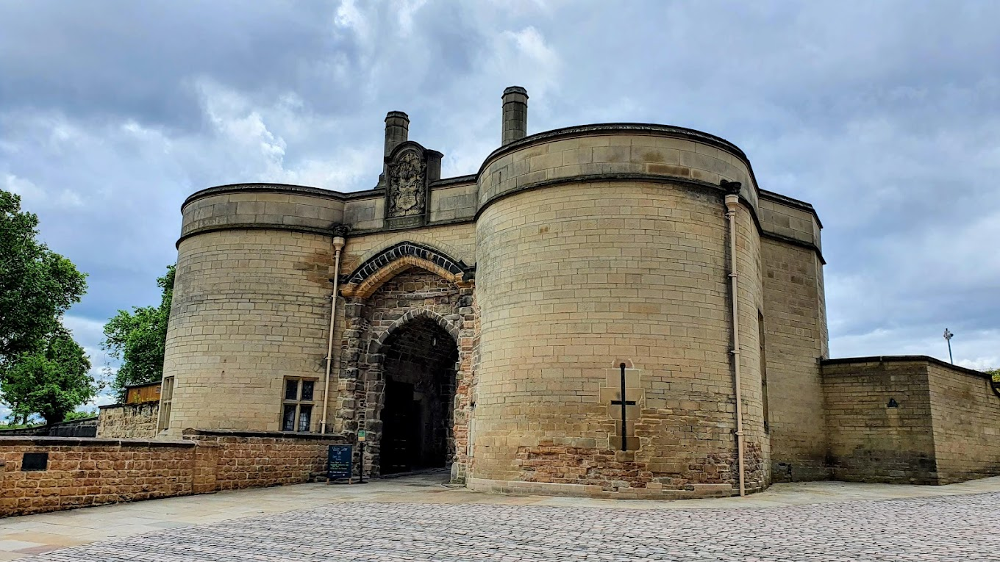
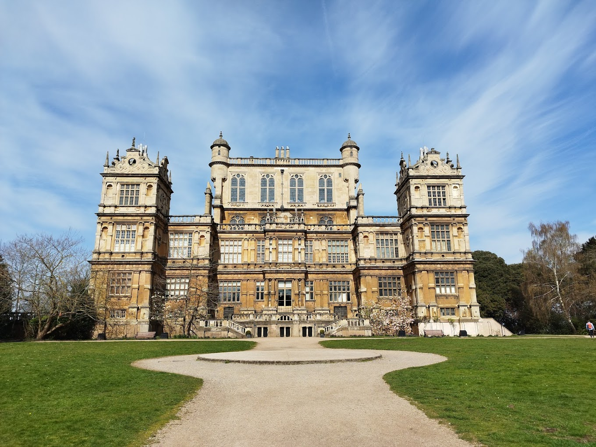
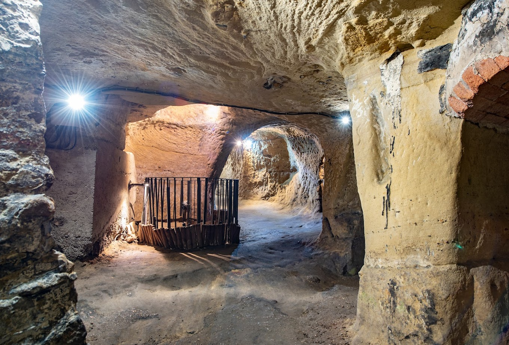
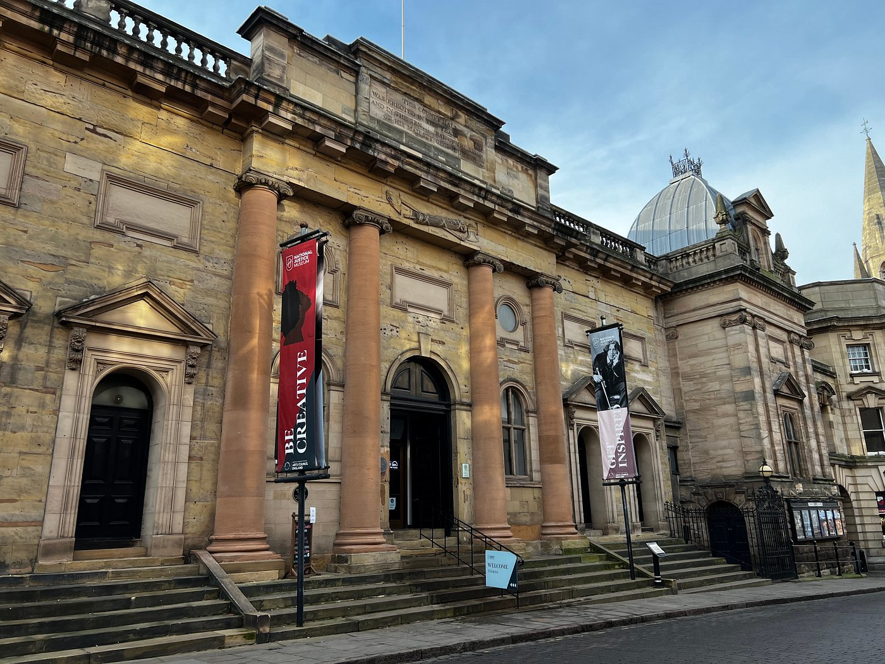
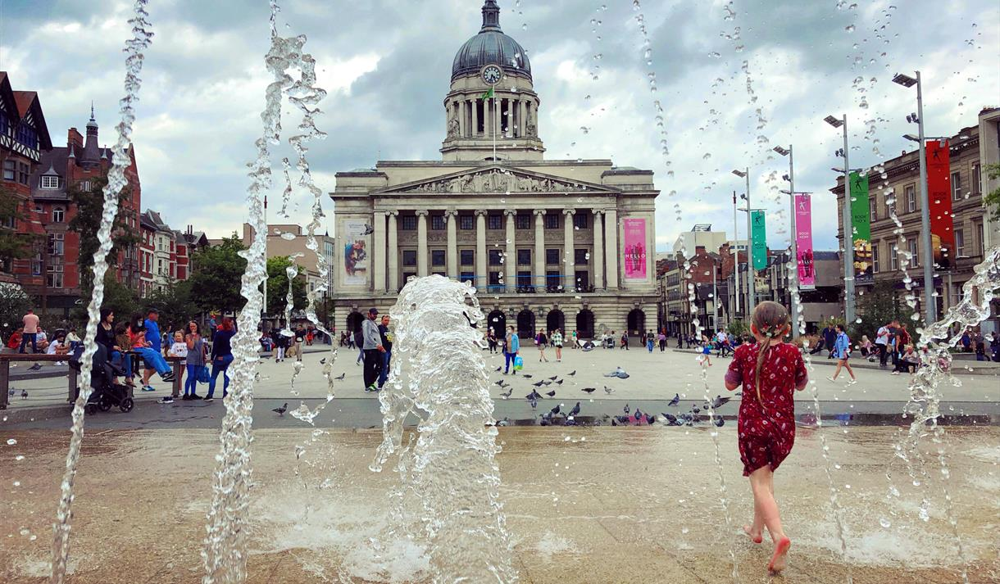
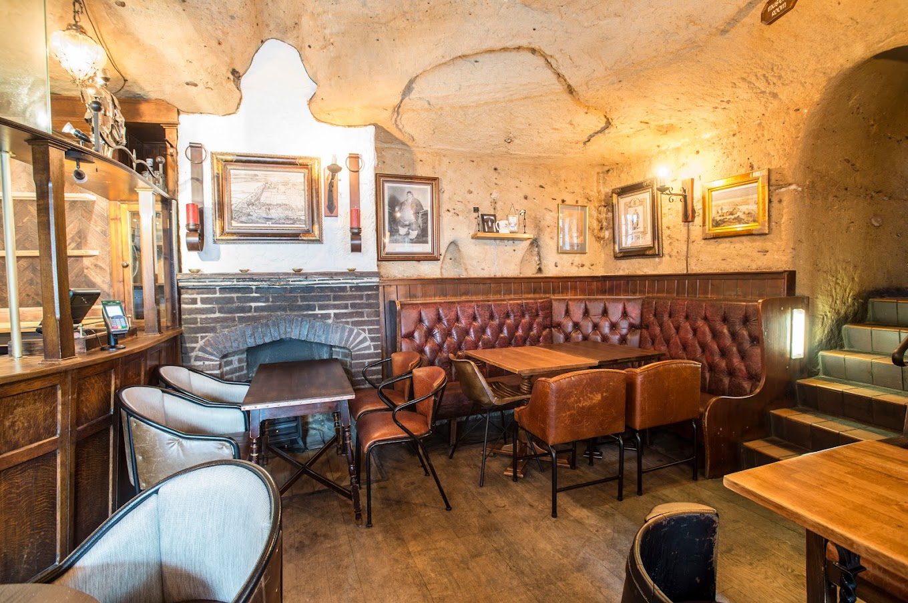

Top Attractions
Nottingham Castle
A historic castle with beautiful gardens and an art gallery.
Wollaton Hall
An Elizabethan mansion set in a scenic deer park.
The City of Caves
An underground network of caves that tells the history of Nottingham.
National Justice Museum
The National Justice Museum is an independent museum on High Pavement in the Lace Market area of Nottingham.
The Old Market Square
A focal point for residents and visitors, Old Market Square is where friends meet, shoppers have a rest, and many great days and nights begin.
Ye Olde Trip to Jerusalem
One of the oldest pubs in England, dating back to 1189 AD.